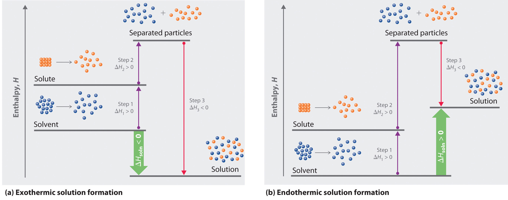
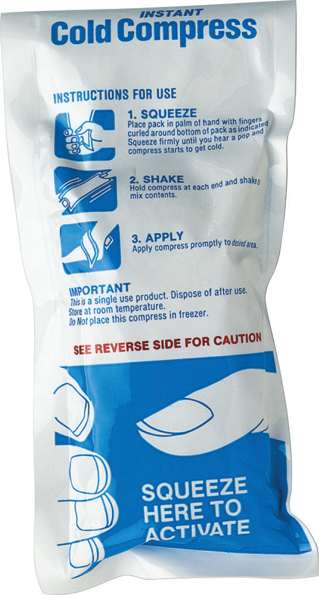
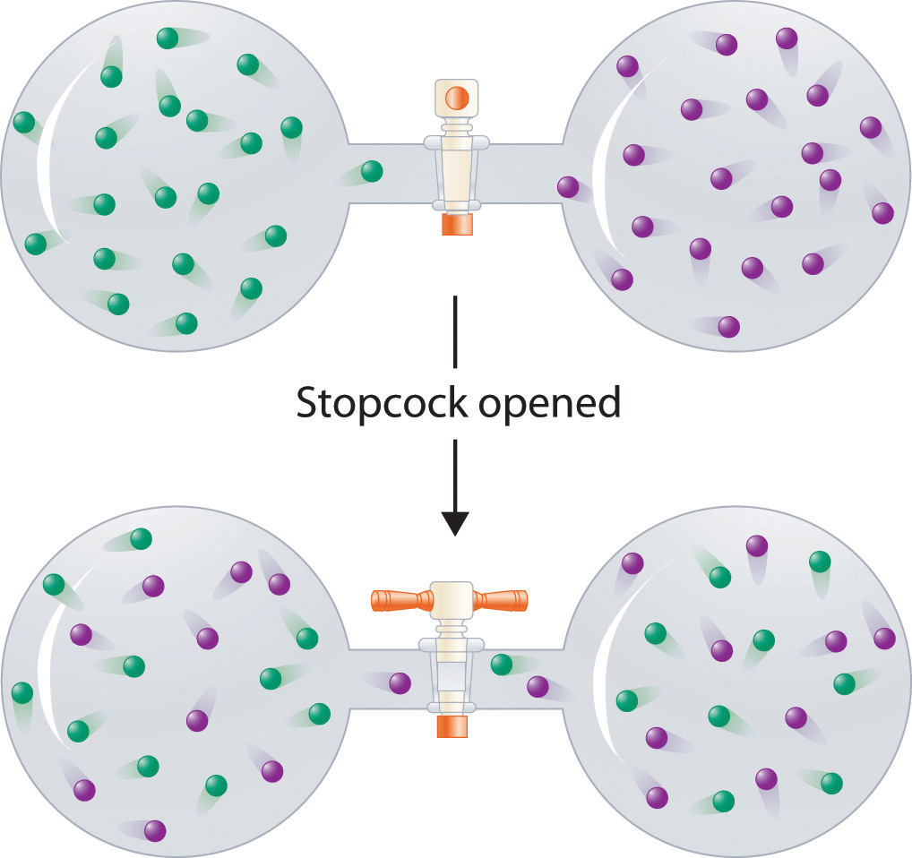

In all solutions, whether gaseous, liquid, or solid, the substance present in the greatest amount is the solvent, and the substance or substances present in lesser amounts are the solute(s). The solute does not have to be in the same physical state as the solvent, but the physical state of the solvent usually determines the state of the solution. As long as the solute and solvent combine to give a homogeneous solution, the solute is said to be soluble in the solvent. Table 13.1 "Types of Solutions" lists some common examples of gaseous, liquid, and solid solutions and identifies the physical states of the solute and solvent in each.
Table 13.1 Types of Solutions
| Solution | Solute | Solvent | Examples |
|---|---|---|---|
| gas | gas | gas | air, natural gas |
| liquid | gas | liquid | seltzer water (CO2 gas in water) |
| liquid | liquid | liquid | alcoholic beverage (ethanol in water), gasoline |
| liquid | solid | liquid | tea, salt water |
| solid | gas | solid | H2 in Pd (used for H2 storage) |
| solid | solid | liquid | mercury in silver or gold (amalgam often used in dentistry) |
The formation of a solution from a solute and a solvent is a physical process, not a chemical one. That is, both solute and solvent can be recovered in chemically unchanged forms using appropriate separation methods. For example, solid zinc nitrate dissolves in water to form an aqueous solution of zinc nitrate:
Equation 13.1
Because Zn(NO3)2 can be recovered easily by evaporating the water, this is a physical process. In contrast, metallic zinc appears to dissolve in aqueous hydrochloric acid. In fact, the two substances undergo a chemical reaction to form an aqueous solution of zinc chloride with evolution of hydrogen gas:
Equation 13.2
Zn(s) + 2H+(aq) + 2Cl−(aq) → Zn2+(aq) + 2Cl−(aq) + H2(g)Dissolution of a solute in a solvent to form a solution does not involve a chemical transformation.
When the solution evaporates, we do not recover metallic zinc, so we cannot say that metallic zinc is soluble in aqueous hydrochloric acid because it is chemically transformed when it dissolves. The dissolution of a solute in a solvent to form a solution does not involve a chemical transformation.
Substances that form a single homogeneous phase in all proportions are said to be completely miscibleCapable of forming a single homogeneous phase, regardless of the proportions with which the substances are mixed. in one another. Ethanol and water are miscible, just as mixtures of gases are miscible. If two substances are essentially insoluble in each other, such as oil and water, they are immiscible. Examples of gaseous solutions that we have already discussed include Earth’s atmosphere (see Chapter 3 "Chemical Reactions") and natural gas (see Chapter 10 "Gases").
As we saw in Chapter 10 "Gases"–Chapter 12 "Solids", energy is required to overcome the intermolecular interactions in a solute. This energy can be supplied only by the new interactions that occur in the solution, when each solute particle is surrounded by particles of the solvent in a process called solvationThe process of surrounding each solute particle with particles of solvent., or hydrationThe process of surrounding solute particles with water molecules. when the solvent is water. Thus all of the solute–solute interactions and many of the solvent–solvent interactions must be disrupted for a solution to form. In this section, we describe the role of enthalpy in this process.
Because enthalpy is a state function, we can use the same type of thermochemical cycle described in Chapter 5 "Energy Changes in Chemical Reactions" to analyze the energetics of solution formation. (For more information about state functions, see Chapter 5 "Energy Changes in Chemical Reactions", Section 5.2 "Enthalpy".) The process occurs in three discrete steps, indicated by ΔH1, ΔH2, and ΔH3 in Figure 13.1 "Enthalpy Changes That Accompany the Formation of a Solution". The overall enthalpy change in the formation of the solution (ΔHsoln) is the sum of the enthalpy changes in the three steps:
Equation 13.3
ΔHsoln = ΔH1 + ΔH2 + ΔH3When a solvent is added to a solution, steps 1 and 2 are both endothermic because energy is required to overcome the intermolecular interactions in the solvent (ΔH1) and the solute (ΔH2). Because ΔH is positive for both steps 1 and 2, the solute–solvent interactions (ΔH3) must be stronger than the solute–solute and solvent–solvent interactions they replace in order for the dissolution process to be exothermic (ΔHsoln < 0). When the solute is an ionic solid, ΔH2 corresponds to the lattice energy that must be overcome to form a solution. As you learned in Chapter 12 "Solids", the higher the charge of the ions in an ionic solid, the higher the lattice energy. Consequently, solids that have very high lattice energies, such as MgO (−3791 kJ/mol), are generally insoluble in all solvents.
Figure 13.1 Enthalpy Changes That Accompany the Formation of a Solution
Solvation can be an exothermic or endothermic process depending on the nature of the solute and solvent. In both cases, step 1, separation of the solvent particles, is energetically uphill (ΔH1 > 0), as is step 2, separation of the solute particles (ΔH2 > 0). In contrast, energy is released in step 3 (ΔH3 < 0) because of interactions between the solute and solvent. (a) When ΔH3 is larger in magnitude than the sum of ΔH1 and ΔH2, the overall process is exothermic (ΔHsoln < 0), as shown in the thermochemical cycle. (b) When ΔH3 is smaller in magnitude than the sum of ΔH1 and ΔH2, the overall process is endothermic (ΔHsoln > 0).
As you will see in Chapter 18 "Chemical Thermodynamics", a positive value for ΔHsoln does not mean that a solution will not form. Whether a given process, including formation of a solution, occurs spontaneously depends on whether the total energy of the system is lowered as a result. Enthalpy is only one of the contributing factors. A high ΔHsoln is usually an indication that the substance is not very soluble. Instant cold packs used to treat athletic injuries, for example, take advantage of the large positive ΔHsoln of ammonium nitrate during dissolution (+25.7 kJ/mol), which produces temperatures less than 0°C (Figure 13.2 "Commercial Cold Packs for Treating Injuries").
Figure 13.2 Commercial Cold Packs for Treating Injuries
These packs contain solid NH4NO3 and water in separate compartments. When the seal between the compartments is broken, the NH4NO3 dissolves in the water. Because ΔHsoln for NH4NO3 is much greater than zero, heat is absorbed by the cold pack during the dissolution process, producing local temperatures less than 0°C.
The enthalpy change that accompanies a process is important because processes that release substantial amounts of energy tend to occur spontaneously. A second property of any system, its entropy, is also important in helping us determine whether a given process occurs spontaneously. We will discuss entropy in more detail in Chapter 18 "Chemical Thermodynamics", but for now we can state that entropy(S)The degree of disorder in a thermodynamic system. The greater the number of possible microstates for a system, the higher the entropy. is a thermodynamic property of all substances that is proportional to their degree of disorder. A perfect crystal at 0 K, whose atoms are regularly arranged in a perfect lattice and are motionless, is arbitrarily assigned an entropy of zero. In contrast, gases have large positive entropies because their molecules are highly disordered and in constant motion at high speeds.
The formation of a solution disperses molecules, atoms, or ions of one kind throughout a second substance, which generally increases the disorder and results in an increase in the entropy of the system. Thus entropic factors almost always favor formation of a solution. In contrast, a change in enthalpy may or may not favor solution formation. The London dispersion forces that hold cyclohexane and n-hexane together in pure liquids, for example, are similar in nature and strength. Consequently, ΔHsoln should be approximately zero, as is observed experimentally. Mixing equal amounts of the two liquids, however, produces a solution in which the n-hexane and cyclohexane molecules are uniformly distributed over approximately twice the initial volume. In this case, the driving force for solution formation is not a negative ΔHsoln but rather the increase in entropy due to the increased disorder in the mixture. All spontaneous processes with ΔH ≥ 0 are characterized by an increase in entropy. In other cases, such as mixing oil with water, salt with gasoline, or sugar with hexane, the enthalpy of solution is large and positive, and the increase in entropy resulting from solution formation is not enough to overcome it. Thus in these cases a solution does not form.
All spontaneous processes with ΔH ≥ 0 are characterized by an increase in entropy.
Table 13.2 "Relative Changes in Enthalpies for Different Solute–Solvent Combinations*" summarizes how enthalpic factors affect solution formation for four general cases. The column on the far right uses the relative magnitudes of the enthalpic contributions to predict whether a solution will form from each of the four. Keep in mind that in each case entropy favors solution formation. In two of the cases the enthalpy of solution is expected to be relatively small and can be either positive or negative. Thus the entropic contribution dominates, and we expect a solution to form readily. In the other two cases the enthalpy of solution is expected to be large and positive. The entropic contribution, though favorable, is usually too small to overcome the unfavorable enthalpy term. Hence we expect that a solution will not form readily.
Table 13.2 Relative Changes in Enthalpies for Different Solute–Solvent Combinations*
| ΔH1 (separation of solvent molecules) | ΔH2 (separation of solute particles) | ΔH3 (solute–solvent interactions) | ΔHsoln (ΔH1 + ΔH2 +ΔH3) | Result of Mixing Solute and Solvent† |
|---|---|---|---|---|
| large; positive | large; positive | large; negative | small; positive or negative | solution will usually form |
| small; positive | large; positive | small; negative | large; positive | solution will not form |
| large; positive | small; positive | small; negative | large; positive | solution will not form |
| small; positive | small; positive | small; negative | small; positive or negative | solution will usually form |
| *ΔH1, ΔH2, and ΔH3 refer to the processes indicated in the thermochemical cycle shown in Figure 13.1 "Enthalpy Changes That Accompany the Formation of a Solution". | ||||
| †In all four cases, entropy increases. | ||||
In contrast to liquid solutions, the intermolecular interactions in gases are weak (they are considered to be nonexistent in ideal gases). Hence mixing gases is usually a thermally neutral process (ΔHsoln ≈ 0), and the entropic factor due to the increase in disorder is dominant (Figure 13.3 "Formation of a Solution of Two Gases"). Consequently, all gases dissolve readily in one another in all proportions to form solutions. We will return to a discussion of enthalpy and entropy in Chapter 18 "Chemical Thermodynamics", where we treat their relationship quantitatively.
Figure 13.3 Formation of a Solution of Two Gases
(top) Pure samples of two different gases are in separate bulbs. (bottom) When the connecting stopcock is opened, diffusion causes the two gases to mix together and form a solution. Even though ΔHsoln is zero for the process, the increased entropy of the solution (the increased disorder) versus that of the separate gases favors solution formation.
Considering LiCl, benzoic acid (C6H5CO2H), and naphthalene, which will be most soluble and which will be least soluble in water?
Given: three compounds
Asked for: relative solubilities in water
Strategy:
Assess the relative magnitude of the enthalpy change for each step in the process shown in Figure 13.1 "Enthalpy Changes That Accompany the Formation of a Solution". Then use Table 13.2 "Relative Changes in Enthalpies for Different Solute–Solvent Combinations*" to predict the solubility of each compound in water and arrange them in order of decreasing solubility.
Solution:
The first substance, LiCl, is an ionic compound, so a great deal of energy is required to separate its anions and cations and overcome the lattice energy (ΔH2 is far greater than zero in Equation 13.3). Because water is a polar substance, the interactions between both Li+ and Cl− ions and water should be favorable and strong. Thus we expect ΔH3 to be far less than zero, making LiCl soluble in water. In contrast, naphthalene is a nonpolar compound, with only London dispersion forces holding the molecules together in the solid state. We therefore expect ΔH2 to be small and positive. We also expect the interaction between polar water molecules and nonpolar naphthalene molecules to be weak ΔH3 ≈ 0. Hence we do not expect naphthalene to be very soluble in water, if at all. Benzoic acid has a polar carboxylic acid group and a nonpolar aromatic ring. We therefore expect that the energy required to separate solute molecules (ΔH2) will be greater than for naphthalene and less than for LiCl. The strength of the interaction of benzoic acid with water should also be intermediate between those of LiCl and naphthalene. Hence benzoic acid is expected to be more soluble in water than naphthalene but less soluble than LiCl. We thus predict LiCl to be the most soluble in water and naphthalene to be the least soluble.
Exercise
Considering ammonium chloride, cyclohexane, and ethylene glycol (HOCH2CH2OH), which will be most soluble and which will be least soluble in benzene?
Answer: The most soluble is cyclohexane; the least soluble is ammonium chloride.
Solutions are homogeneous mixtures of two or more substances whose components are uniformly distributed on a microscopic scale. The component present in the greatest amount is the solvent, and the components present in lesser amounts are the solute(s). The formation of a solution from a solute and a solvent is a physical process, not a chemical one. Substances that are miscible, such as gases, form a single phase in all proportions when mixed. Substances that form separate phases are immiscible. Solvation is the process in which solute particles are surrounded by solvent molecules. When the solvent is water, the process is called hydration. The overall enthalpy change that accompanies the formation of a solution, ΔHsoln, is the sum of the enthalpy change for breaking the intermolecular interactions in both the solvent and the solute and the enthalpy change for the formation of new solute–solvent interactions. Exothermic (ΔHsoln < 0) processes favor solution formation. In addition, the change in entropy, the degree of disorder of the system, must be considered when predicting whether a solution will form. An increase in entropy (a decrease in order) favors dissolution.
Classify each of the following as a heterogeneous mixture or homogeneous mixture. Explain your rationale in each case.
Solutions and heterogeneous mixtures are at the extreme ends of the solubility scale. Name one type of mixture that is intermediate on this scale. How are the properties of the mixture you have chosen different from those of a solution or a heterogeneous mixture?
Classify each process as simple dissolution or a chemical reaction.
Classify each process as simple dissolution or a chemical reaction.
You notice that a gas is evolved as you are dissolving a solid in a liquid. Will you be able to recover your original solid by evaporation? Why or why not?
Why is heat evolved when sodium hydroxide pellets are dissolved in water? Does this process correspond to simple dissolution or a chemical reaction? Justify your answer.
Which process(es) is the simple formation of a solution, and which process(es) involves a chemical reaction?
Using thermochemical arguments, explain why some substances that do not form a solution at room temperature will form a solution when heated. Explain why a solution can form even when ΔHsoln is positive.
If you wanted to formulate a new compound that could be used in an instant cold pack, would you select a compound with a positive or negative value of ΔHsoln in water? Justify your answer.
Why is entropy the dominant factor in the formation of solutions of two or more gases? Is it possible for two gases to be immiscible? Why or why not?
Homogeneous mixtures: aqueous ammonia, liquid decongestant, vinegar, and gasoline. Heterogeneous mixtures: seawater and fog.
All are chemical reactions except dissolving iodine crystals in CCl4.